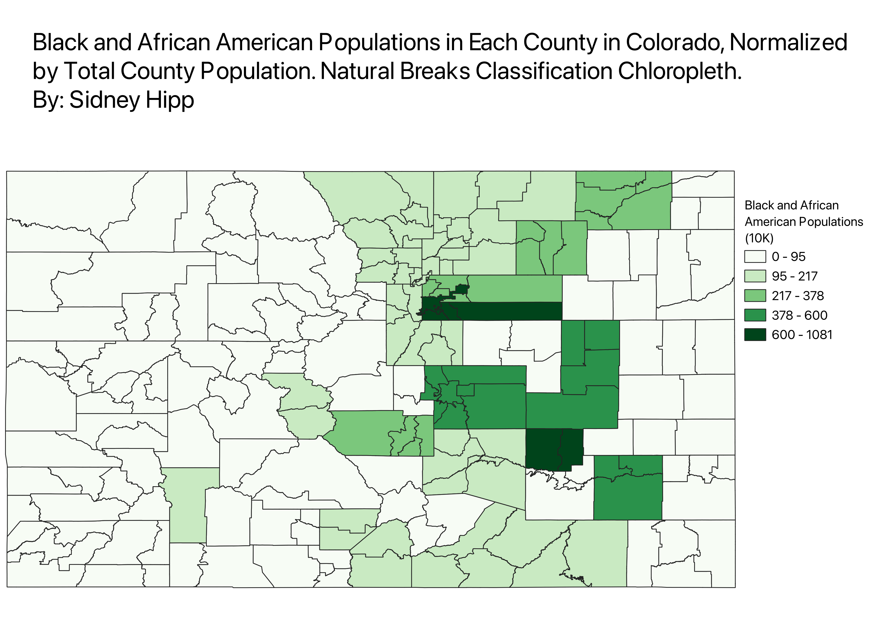
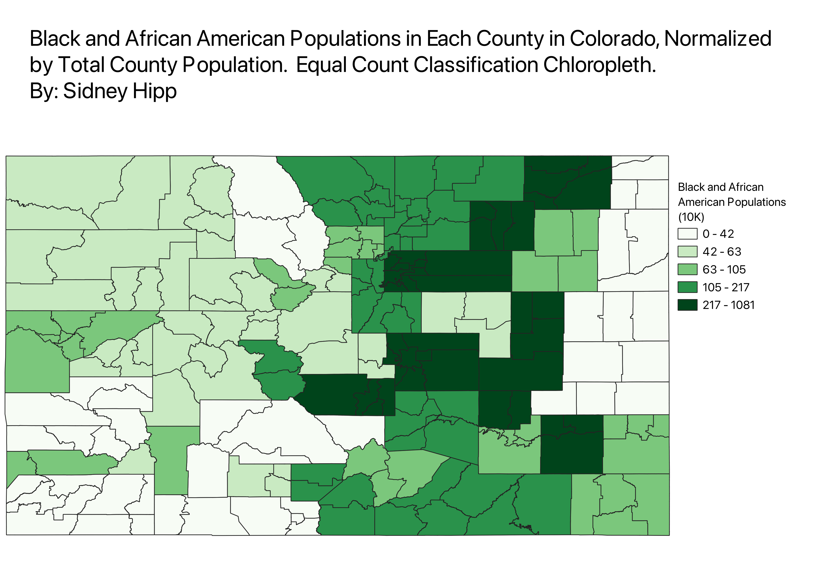
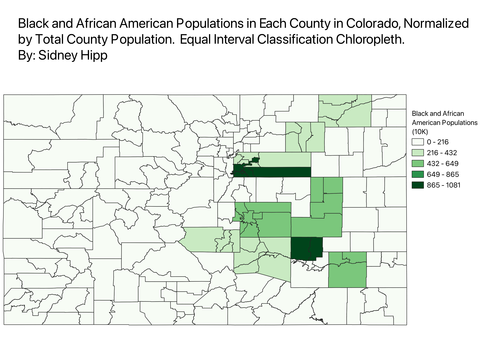

Homework 6.2: Census Data Ratios and Categories
For all 3 chloropleths, I normalized the data by dividing the population of Black and African American people in each county by the total population of each county. I did this in order to get a more representative visualization of the spread of Black and African American People in Colorado. It helps account for the fact that counties with smaller total populations are in turn going to also have smaller Black and African American Populations.
Natural Breaks Data Classification
The Natural Breaks Classification utilizes an algorithm to group values in classes that are separated by distinct break points. A benefit of this classification is that it makes it easier to see the counties that are outliers (have much larger Black and African American populations in comparison to other counties). However, a disadvantage of this classification is that the classes can have widely varying number ranges, which the viewer should take note of.

Equal Count (Quantile) Data Classification
The Quantile Classification places equal numbers of observations into each class. A benefit of this distribution is that it can show the top 25 counties with the highest Black and African American populations. Additionally, each classification level is represented in the chloropleth. However, the disadvantage is that it does not illustrate how drastically different the top 25 counties differ in Black and African American population size.

Equal Interval Data Classification
The Equal Interval Classification divides the range of attribute values into equally sized classes. A benefit of this is that it is easy for the viewer to interpret the legend, there are no uneven ranges to take note of. Additionally, in this case, it is able to emphasize the outliers for counties with the highest Black and African American populations. However, a disadvantage to this classification is that not all of the data classes are represented and most of the counties fall into the smallest classification, so we can't tell how those counties differentiate.
